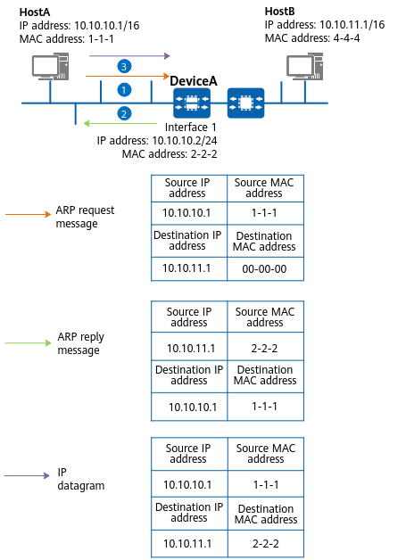
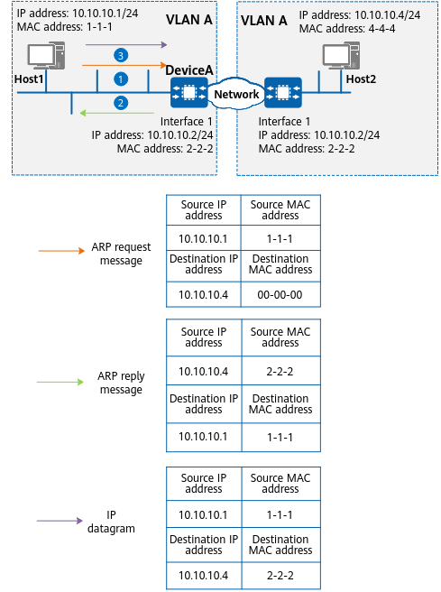
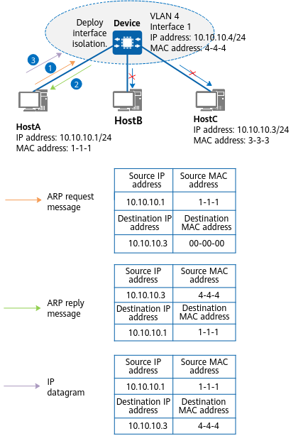
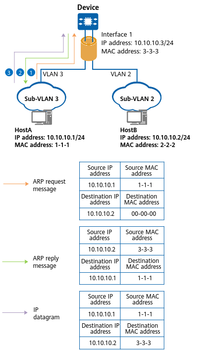

ARP is applicable only to devices on the same physical network. When a device on a physical network needs to send IP datagrams to another physical network, the gateway is used to query the routing table to implement communication between the two networks. However, routing table query consumes system resources and affects other services. To resolve this problem, deploy proxy ARP on an intermediate device. Proxy ARP enables devices that reside on different physical network segments but on the same IP network to resolve IP addresses to MAC addresses. This feature helps reduce system resource consumption caused by routing table queries and improves the efficiency of system processing.
Routed Proxy ARP
A large company network is usually divided into multiple subnets to facilitate management. The routing information of a host in a subnet can be modified so that IP datagrams sent from this host to another subnet are first sent to the gateway that connects different subnets and then to another subnet. However, this solution makes it difficult to manage and maintain devices. If the gateways connected to hosts have different addresses, you can deploy routed proxy ARP so that the gateways send their interface MAC addresses to the hosts.
Figure 1 illustrates how routed proxy ARP is implemented between HostA and HostB.
Figure 1 Routed proxy ARP implementation
- HostA sends an ARP request message for the MAC address of HostB.
- After receiving the ARP request message, DeviceA checks the destination IP address of the message and finds that the requested MAC address is not its own MAC address. DeviceA then checks whether there are routes to HostB. If a route to HostB is available, DeviceA checks whether routed proxy ARP is enabled on interface 1.
- If routed proxy ARP is enabled on interface 1, DeviceA sends interface 1's MAC address to HostA.
- If routed proxy ARP is not enabled on interface 1, DeviceA discards the ARP request message. If no route to HostB is available, DeviceA discards the ARP request message.
- After learning interface 1's MAC address, HostA sends IP datagrams to DeviceA using this MAC address.
- DeviceA receives the IP datagrams and forwards them to HostB.
Proxy ARP Anyway
In scenarios where servers are partitioned into hosts, the flexible deployment and migration of hosts on multiple servers or devices can be achieved by configuring Layer 2 interconnection between multiple devices. However, this approach may lead to larger Layer 2 domains on the network and the risk of broadcast storms. To resolve this problem, enable proxy ARP anyway on a host gateway. In this way, the gateway sends its interface MAC address to a source host and communication between hosts is implemented through route forwarding.
Figure 2 illustrates how proxy ARP anyway is implemented between Host1 and Host2.
Figure 2 Proxy ARP anyway implementation
- Host1 sends an ARP request message for the MAC address of Host2.
- After receiving the ARP request message, DeviceA checks the destination IP address of the message and finds that the requested MAC address is not its own MAC address. DeviceA checks whether proxy ARP anyway is enabled on interface 1. If proxy ARP anyway is enabled, DeviceA sends interface 1's MAC address to Host1. If proxy ARP anyway is not enabled on interface 1, DeviceA discards the ARP request message.
- After learning the MAC address of interface 1, Host1 sends IP datagrams to DeviceA using this MAC address.
- DeviceA receives the IP datagrams and forwards them to Host2.
Intra-VLAN Proxy ARP
Figure 3 illustrates how intra-VLAN proxy ARP is implemented between HostA and HostC.
Figure 3 Intra-VLAN proxy ARP implementation
HostA, HostB, and HostC belong to the same VLAN, but HostA and HostC cannot communicate at Layer 2 because interface isolation is enabled on Device. To allow HostA and HostC to communicate, configure interface 1 on Device and enable intra-VLAN proxy ARP.
- HostA sends an ARP request message for the MAC address of HostC.
- After receiving the ARP request message, Device checks the destination IP address of the message and finds that the requested MAC address is not the MAC address of interface 1. Device then searches its ARP table for the ARP entry indicating the mapping between the IP and MAC addresses of HostC. If Device finds this ARP entry in its ARP table, it checks whether intra-VLAN proxy ARP is enabled on interface 1.
- If intra-VLAN proxy ARP is enabled on interface 1, Device sends the MAC address of interface 1 to HostA.
- If intra-VLAN proxy ARP is not enabled on interface 1, Device discards the ARP request message.
If Device does not find this ARP entry in its ARP table, it discards the ARP request message and checks whether intra-VLAN proxy ARP is enabled.
- If intra-VLAN proxy ARP is enabled, Device broadcasts the ARP request message with the IP address of HostC as the destination IP address within VLAN 4. After receiving an ARP reply message from HostC, Device generates an ARP entry indicating the mapping between the IP and MAC addresses of HostC.
- If intra-VLAN proxy ARP is not enabled, Device does not perform any operations.
- After learning the MAC address of interface 1, HostA sends IP datagrams to Device using this MAC address.
- Device receives the IP datagrams and forwards them to HostC.
Inter-VLAN Proxy ARP
Figure 4 illustrates how inter-VLAN proxy ARP is implemented between HostA and HostB.
Figure 4 Inter-VLAN proxy ARP implementation
HostA belongs to VLAN 3, whereas HostB belongs to VLAN 2. Therefore, HostA cannot communicate with HostB. To allow HostA and HostB to communicate, configure interface 1 on Device and enable inter-VLAN proxy ARP.
- HostA sends an ARP request message for the MAC address of HostB.
- After receiving the ARP request message, Device checks the destination IP address of the message and finds that the requested MAC address is not the MAC address of interface 1. Device then searches its ARP table for the ARP entry indicating the mapping between the IP and MAC addresses of HostB. If Device finds this ARP entry in its ARP table, it checks whether inter-VLAN proxy ARP is enabled on interface 1.
- If inter-VLAN proxy ARP is enabled on interface 1, Device sends the MAC address of interface 1 to HostA.
- If inter-VLAN proxy ARP is not enabled, Device discards the ARP request message.
If Device does not find this ARP entry in its ARP table, it discards the ARP request message and checks whether inter-VLAN proxy ARP is enabled.
- If inter-VLAN proxy ARP is enabled, Device broadcasts the ARP request message with the IP address of HostB as the destination IP address within VLAN 2. After receiving an ARP reply message from HostB, Device generates an ARP entry indicating the mapping between the IP and MAC addresses of HostB.
- If inter-VLAN proxy ARP is not enabled, Device does not perform any operations.
- After learning the MAC address of interface 1, HostA sends IP datagrams to Device using this MAC address.
- Device receives the IP datagrams and forwards them to HostB.
Application Scenarios
Table 1 Application scenarios of proxy ARPProxy ARP Type
|
Application Scenario
|
|---|
Routed proxy ARP
|
Two hosts that need to communicate belong to the same network segment but different physical networks. The gateways to which hosts are connected have different IP addresses.
|
Proxy ARP anyway
|
Two hosts that need to communicate belong to the same network segment but different physical networks. The gateways to which hosts are connected have the same IP address.
|
Intra-VLAN proxy ARP
|
Two hosts that need to communicate belong to the same network segment and the same VLAN in which user isolation is configured.
|
Inter-VLAN proxy ARP
|
Two hosts that need to communicate belong to the same network segment but different VLANs.
|
Benefits
Proxy ARP enables the source host on a network to mistakenly consider that the destination host and itself are on the same network segment. In this way, the network details can be hidden, thereby achieving transparent subnet division.
All operations related to proxy ARP are performed on a gateway. No configuration is required for hosts connected to the gateway. In addition, proxy ARP affects only the ARP tables on hosts and does not affect the ARP table or routing table on a gateway.
Proxy ARP can be used when no default gateway is configured for a host or when a host cannot route messages.